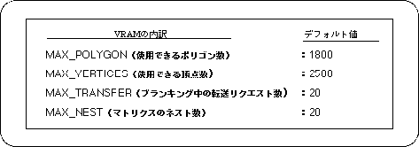

The SGL system uses 0x40000 bytes in the WORK RAM-H area for sprite and scroll control. In addition, because Gouraud shading is used when the light source affects the texture, 264 bytes of VDP1 VRAM are used as this data. The breakdown and default settings are shown below.

The function “slPutPolygon” does not process the model if the number of polygons or total vertices used in the specified model exceeds the maximum number of each.
The functions “slPutSprite”, “slDispSprite”, and “slSetSprite” add the number of polygons one by one each time they are executed, and stop processing the data when the maximum number is exceeded (however, the specified It is not added when the Z position is outside the display range).